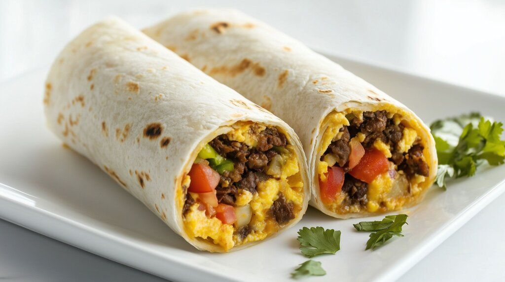

Ham and Cheese Sliders
Home

Description
These baked ham and cheese sliders are the most delicious sandwiches and
perfect for any party. They are so good that even the pickiest of eaters
will eat these!
Ingredients
- 3/4 cup melted butter
- 1 1/2 tablespoons Dijon mustard
- 1 1/2 tablespoons Worcestershire sauce
- 1 tablespoon dried minced onion
- 2 bags of Kings Hawaiian bread
- 1 lb thinly sliced cooked deli ham
- 1 lb thinly sliced cheese of choice (I prefer Pepper Jack)
-
Preheat over to 350 degrees F (175 degrees C). Grease 9x13 in baking
dish.
-
Mix butter, Dijon mustard, Worcestershire sauce, dried onion in a bowl.
-
Separate the top of the rolls and place the bottom pieces in the baking
dish. Add 1/2 of the ham onto the rolls, add the cheese, then top with
remaining ham slices.
-
Place top of the rolls on top layer of ham, then pour butter mixture on
top evenly over the rolls.
-
Bake in preheated oven until rolls are lightly browned and cheese is
melted. Slice or pull apart individual rolls to serve.